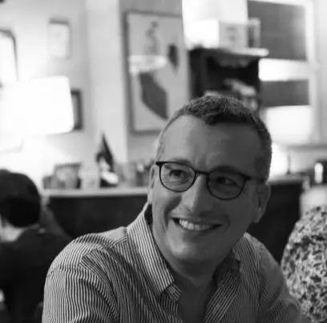

Peirce Interprets Peirce
A collaborative digital humanities project dedicated to exploring the original manuscripts of Charles S.
Peirce.
By combining rigorous semiotic scholarship with state-of-the-art computational methods, we aim to make
Peirce’s intellectual legacy more accessible, analyzable, and engaging for scholars and the wider
public.